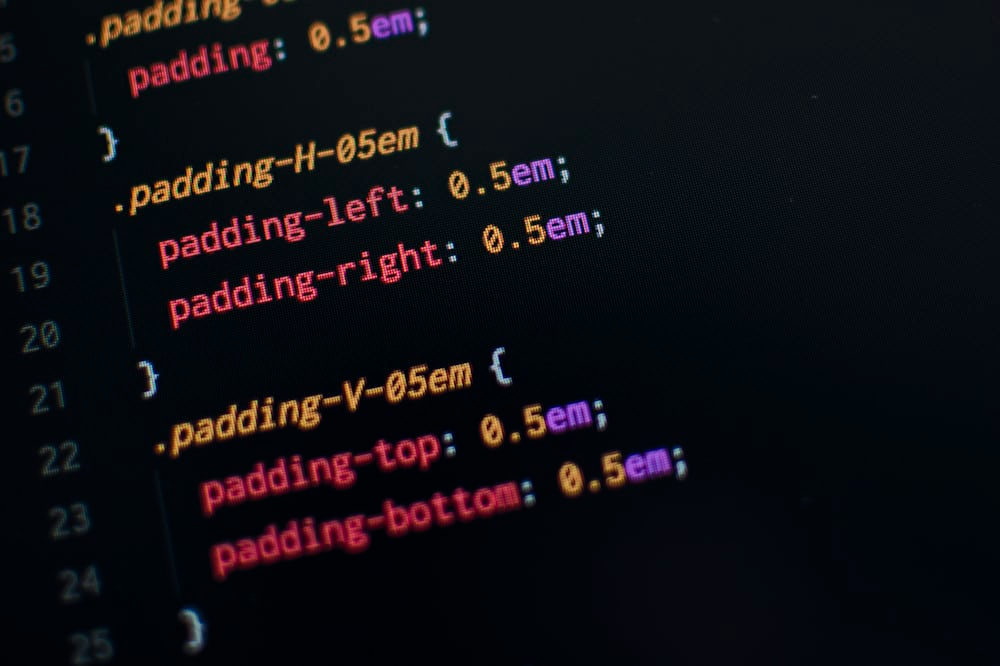
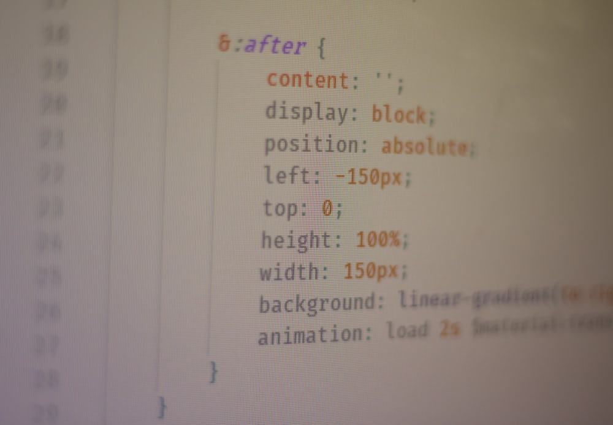
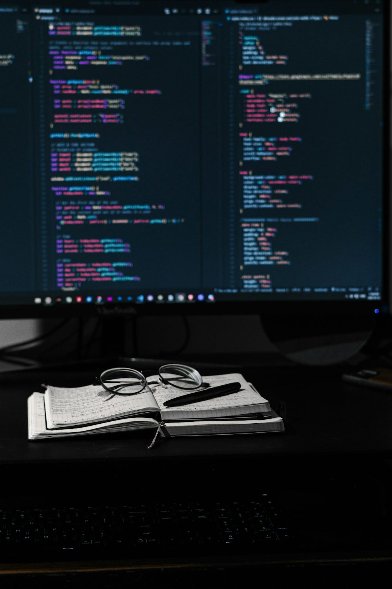

I started with the Responsive Web Design certification. Learning HTML and CSS was both challenging and exciting.
I remember spending hours perfecting my first project—a personal portfolio site.The journey was tough but we made it. It felt amazing to see my ideas come to life on the screen. Building projects was a highlight of my journey. Each project helped solidify my understanding and allowed me to showcase my skills.
I am proud where i am now learning a lot from freecodeCamp. Thank you. I started with the Responsive Web Design certification. Learning HTML and CSS was both challenging and exciting. I remember spending hours perfecting my first project—a personal portfolio site.The journey was tough but we made it. It felt amazing to see my ideas come to life on the screen. Building projects was a highlight of my journey. Each project helped solidify my understanding and allowed me to showcase my skills. I am proud where i am now learning a lot from freecodeCamp. Thank you. I remember spending hours perfecting my first project—a personal portfolio site.The journey was tough but we made it. It felt amazing to see my ideas come to life on the screen. Building projects was a highlight of my journey. Each project helped solidify my understanding and allowed me to showcase my skills. I am proud where i am now learning a lot from freecodeCamp. Thank you.
I started with the Responsive Web Design certification. Learning HTML and CSS was both challenging and exciting. I remember spending hours perfecting my first project—a personal portfolio site.The journey was tough but we made it. It felt amazing to see my ideas come to life on the screen. Building projects was a highlight of my journey. Each project helped solidify my understanding and allowed me to showcase my skills. I am proud where i am now learning a lot from freecodeCamp. Thank you. I started with the Responsive Web Design certification. Learning HTML and CSS was both challenging and exciting. I remember spending hours perfecting my first project—a personal portfolio site.  The journey was tough but we made it. It felt amazing to see my ideas come to life on the screen. Building projects was a highlight of my journey. Each project helped solidify my understanding and allowed me to showcase my skills. I am proud where i am now learning a lot from freecodeCamp. Thank you. I started with the Responsive Web Design certification. Learning HTML and CSS was both challenging and exciting. I remember spending hours perfecting my first project—a personal portfolio site.The journey was tough but we made it.